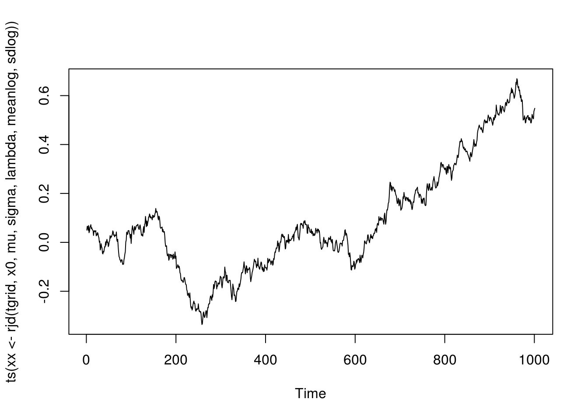

Chapter 5 Random Number Generation
(Wiki) A pseudorandom number generator (PRNG), also known as a deterministic random bit generator (DRBG), is an algorithm for generating a sequence of numbers whose properties approximate the properties of sequences of random numbers. The PRNG-generated sequence is not truly random, because it is completely determined by a relatively small set of initial values, called the PRNG’s seed (which may include truly random values).
5.1 Univariate Random Number Generation
Random number from standard uniform distribution \(U(0, 1)\) is crucial. To illustrate that pseudorandom numbers are deterministic, consider a multiplicative random number generator \[ I_{n+1} = 7^5 I_n\mathrm{mod} (2^{31} - 1). \]
runif.my <- function(n, seed) {
ret <- double(n)
last <- seed
p <- 2^31 - 1
for (i in 1:n) {
last <- (7^5 * last) %% p
ret[i] <- last / p
}
ret
}
u <- runif.my(1000, 2)The randomness can be viewed from a histogram and can be tested, for example, with the KS test.
##
## One-sample Kolmogorov-Smirnov test
##
## data: u
## D = 0.020604, p-value = 0.7896
## alternative hypothesis: two-sidedIn R, check ?RNG.
We assume that generation from \(U(0,1)\) has been solved for all practical purposes and focus on turning uniform variables to variables with other desired distributions.
5.1.1 Inverse CDF
For a non-decreasing function \(F\) on \(\mathbb{R}\), the generalized inverse of \(F\), \(F^-\), is the function \[ F^-(u) = \inf\{x: F(x) \ge u\}. \] If \(U\) is \(U(0, 1)\), then \(F^-(U)\) has distribution \(F\). For continuous variables, \(F^-\) is simply \(F^{-1}\), the quantile function or inverse probability integral transformation. This works for both continuous and non-continuous variables.
Average numbers of searches for Poisson variate generation with mean \(\lambda\) (Ross’s Simulation book, p.51). Given a \(U\), the inversion algorithm successively checks if the Poisson variate is 0, 1, 2, and so on, which on average takes \(1 + \lambda\) searches. It can be greatly improved by first checking on the integers that are closest to \(\lambda\). Let \(I\) be the integer part of \(\lambda\). To generate a Poisson variate \(X\), check whether or not \(X \le I\) by seeing whether or not \(U \le F(I)\). Then search downward starting from \(I\) if \(X \le I\) and upward from \(I + 1\) otherwise.
On average the number of searches needed by this algorithm is roughly 1 more than the mean absolute difference between \(X\) and \(\lambda\). By \(N(\lambda, \lambda)\) approximation, this is approximately \[ 1 + E |X - \lambda| = 1 + 0.798 \sqrt{\lambda}. \]
The {rpois()} function in R uses an efficient algorithm
that generates variables for \(\lambda \ge 10\) by truncating suitable
normal deviates and applying a correction with low probability
(Ahrens and Dieter 1982).
5.1.2 Rejection Method
Idea: To sample from \(f\), we sample from \(g\) and accept the sample with certain rate to make sure the resulting variable follows \(f\).
Setup: 1) densities \(f\) and \(g\) has the same support. 2) \(f(x) \le M g(x)\) for some \(M > 0\).
The rejection algorithm:
- Generate \(Y\) from \(g\).
- Generate \(U\) from standard uniform.
- If \(U \le f(Y) / [M g(Y)]\), output \(X = Y\); otherwise, return to step 1.
Validity proof: For \(x\) in \(\mathcal{X}\), the support of \(f\) and \(g\), show that \(\Pr(X \le x) = \Pr(Y \le x \mid \mbox{Accept}) = \int_{-\infty}^x f(y) \mathrm{d}y\).
Fundamental theorem of simulation: Simulating from \(X \sim f(x)\) is equivalent to simulating from \((X, U) ~ \mathcal{U}\{\{x, u\}: 0 < u < f(x)\}\). (Hint: the marginal density of \(X\) is \(f(x)\).)
Efficiency: The probability of acceptance is exactly \(1 / M\). The expected number of trials until a variable is accepted is \(M\).
Among choices of \(g\), \(g_i\)’s, the optimal sampler minimizes \(M\).
rNormTail <- function(n, c) {
lambda <- (c + sqrt(c * c + 4)) / 2
alpha <- exp(0.5 * lambda * lambda - lambda * c) /
sqrt(2 * pi) / lambda / (1 - pnorm(c))
x <- rep(NA, n)
for (i in 1:n) {
while (TRUE) {
cand <- rexp(1, lambda)
ratio <- dnorm(cand + c) / (1 - pnorm(c)) / dexp(cand, lambda) / alpha
u <- runif(1)
if (u < ratio) break
}
x[i] <- cand
}
x + c
}
rNormTail.f <- function(n, c, batSize = n) {
lambda <- (c + sqrt(c * c + 4)) / 2
alpha <- exp(0.5 * lambda * lambda - lambda * c) /
sqrt(2 * pi) / lambda / (1 - pnorm(c))
x <- rep(NA, n)
ndone <- 0
while (TRUE) {
cand <- rexp(batSize, lambda)
ratio <- dnorm(cand + c) / (1 - pnorm(c)) / dexp(cand, lambda) / alpha
u <- runif(batSize)
accept <- u < ratio
naccpt <- sum(accept)
ntodo <- n - ndone
ngood <- min(ntodo, naccpt)
sample <- cand[accept][1:ngood]
x[ndone + 1:ngood] <- sample
ndone <- ndone + ngood
if (ndone == n) break
}
x + c
}
cc <- 7
n <- 1000
x1 <- qnorm(runif(n, pnorm(cc), 1))
x2 <- rNormTail(n, cc)
x3 <- rNormTail.f(n, cc)
hist(x1, freq=FALSE)
curve(dnorm(x) / (1 - pnorm(cc)), 7, max(x1), add=TRUE)
library(microbenchmark)
microbenchmark(x1 <- qnorm(runif(n, pnorm(cc), 1)),
x2 <- rNormTail(n, cc),
x3 <- rNormTail.f(n, cc, n),
x4 <- rNormTail.f(n, cc, n / 2))## Unit: microseconds
## expr min lq mean median
## x1 <- qnorm(runif(n, pnorm(cc), 1)) 91.211 92.8255 97.03013 96.368
## x2 <- rNormTail(n, cc) 6240.373 6396.4580 7144.71968 6479.923
## x3 <- rNormTail.f(n, cc, n) 363.100 369.5605 385.57957 379.774
## x4 <- rNormTail.f(n, cc, n/2) 293.763 302.6890 318.16556 315.494
## uq max neval
## 100.0890 109.158 100
## 6545.1260 14682.738 100
## 391.4545 496.655 100
## 325.3295 390.709 1005.1.3 Sampling Importance Resampling
##' Sampling importance resampling
##'
##' @param n desired sample size
##' @param density target density
##' @param envolope density of the sampler
##' @param sampler random number generation of the sampler
##' @param m sample size to draw from the sampler
##' @return vector of random sample from the target density
sir <- function(n, density, envolope, sampler, m = 20 * n) {
y <- sampler(m)
weight <- density(y) / envolope(y)
weight <- weight / sum(weight)
## resample
sample(y, size = n, replace = TRUE, prob = weight)
}
n <- 5000
## sample from normal using cauchy as sampler
x <- sir(n, dnorm, dcauchy, rcauchy)
hist(x, prob = TRUE)
curve(dnorm(x), add = TRUE, col="darkblue")## [1] 48345.2 Stochastic Processes
A stochastic or random process is a collection of random variables indexed by certain set. The indexing set is often a subset of time or space. When the indexing set is multidimensional, the stochastic process is also called a random field.
5.2.1 Gaussian Markov Process
Simulation of Brownian motion and Brianian bridge on a grid time grid.
## Brownian motion
rBM <- function(tgrid, x0 = 0) {
dt <- diff(tgrid)
z <- rnorm(length(dt), sd = sqrt(dt))
c(x0, cumsum(z) + x0)
}
## Brownian bridge
rBB <- function(tgrid, x, y) {
n <- length(tgrid)
w <- double(n)
a <- tgrid[1]; w[1] <- x
b <- tgrid[n]; w[n] <- y
for (i in 2:(n-1)) {
t <- tgrid[i]
mu <- ((b - t) * x + (t - a) * y) / (b - a)
sigma <- sqrt((t - a) * (b - t) / (b - a))
w[i] <- x <- rnorm(1, mu, sigma)
a <- tgrid[i]
}
w
}The square root diffusion process has a closed-form transition distribution, which is a scaled non-central chi-squared.
rcir <- function(n, r0, alpha, b, sigma, dt) {
df <- 4 * alpha * b / sigma / sigma
ee <- exp(- alpha * dt)
cc <- sigma^2 * (1 - ee) / 4 / alpha
lambda <- ee * r0 / cc
rchisq(n, df = df, ncp = lambda) * cc
}The transition density would otherwise be approximated by the Euler scheme with a fine time grid.
rcir_euler <- function(n, r0, alpha, b, sigma, dt, ng = 10) {
ddt <- dt / ng
sapply(1:n, function(idx) {
for (i in seq(1:ng)) {
rt <- r0 + alpha * (b - r0) * ddt +
sigma * sqrt(r0 * ddt) * rnorm(1)
rt <- max(0, rt)
r0 <- rt
}
rt
})
}Here is an illustration.
5.2.2 Counting Process
A counting process is a stochastic process \(\{N(t); t ≥ 0\}\) with values that are non-negative, integer, and non-decreasing. It is often used to model the occurrence of certain event.
5.2.2.1 Homogeneous Poission Process
A counting process is a homogeneous Poission process if it satisfies three conditions:
- \(N(0) = 0\);
- the occurrences of events in disjoint time intervals are independent;
- the number of events in any interval of length \(t\) is a Poisson random variable with mean \(\lambda t\).
It can be shown that, conditional on the total number of events in an interval \((0, \tau]\), the event times are distributed as order statistics from a random sample with uniform distribution over \((0, \tau]\). Simulation of a homogeneous Poisson process with indensity \(\lambda\) over \((0, \tau]\) can then be done in two steps.
- Generate \(N\) from a Poisson distribution with mean \(\lambda \tau\).
- Generate \(N\) variables from the uniform distribution over \((0, \tau]\) and get their order statistics.
The resulting \(N\) variables are the simulated event times.
It can be shown that the inter-arrival distribution of a homogeneous Poisson process with intensity \(\lambda\) are independent and identically distributed exponential variables with rate \(\lambda\). This result gives an alternative simulation approach.
5.2.3 Inhomogeneous Poisson Process
An inhomogeneous Poisson process is a characterized by an intensity function \(\lambda(t)\) such that
- N(0) = 0;
- the occurrences of events in disjoint time intervals are indepdent;
- the number of events in an interval \((0, \tau]\) is a Poissoin random variable with mean \(\Lambda(\tau) = \int_0^\tau \lambda(t) \mathrm{d}{t}\).
The inversion method generates inter-arrival event times (Cinlar 1975, 96). Consider an nonhomomegeneous Poisson process with mean function \(\Lambda(t)\), \(t > 0\), which is continuous and nondecreasing. If \(\Lambda(T_1), \Lambda(T_2), \ldots\) are event times from a homogeneous Poisson process with rate one, then \(T_1, T_2, \ldots\) are event times from a nonhomogeneous Poisson process with mean function \(\Lambda(t)\). The algorithm works as follows.
- Generate \(S_1, S_2, \ldots\) from a homogeneous Poisson process with rate one.
- Let \(T_i = \Lambda^{-1}(S_i)\), \(i = 1, 2, \ldots\).
The order statistics method : Let \(T_1, T_2, \ldots\) be random variables representing the event times of a nonhomogeneous Poisson process with continuous mean function \(\Lambda(t)\), \(t > 0\). Let \(N_t\) be the cumulative number of events by time \(t\). Conditional on \(N_{\tau} = n\) over the interval \((0, \tau]\), the event times \(T_1, T_2, \ldots\) are distributed as order statistics from a random sample with distribution function \(F(t) = \Lambda(t) / \Lambda(\tau)\), \(t \in (0, \tau]\).
The thinning method (process analog of the acceptance-rejection method) (Lewis and Shedler 1979): Let \(\lambda_{\max} = \max_{t \in (0, \tau]} \lambda(t)\). Suppose that \(S_1, S_2, \ldots\) are event times from a homogeneous Poisson process with rate function \(\lambda_{\max}\). If the \(i\)th event time \(S_i\) is independently accepted with probability \(\lambda(t) / \lambda_{\max}\), the the remaining event times form a realization from a nonhomogeneous Poisson process with rate function \(\lambda(t)\) in \((0, \tau]\).
## simulation of a nonhomegeneous Poisson process
## with the thinning method
rnhpp <- function(intensity, intmax, tmax) {
n <- rpois(1, intmax)
tt <- runif(n, 0, tmax)
u <- runif(n)
accept <- u < intensity(tt) / intmax
sort(tt[accept])
}
intfun <- function(x) sin(2 * pi * x) + 1
ff <- rnhpp(intfun, 2, 1)
hist(unlist(replicate(10000, rnhpp(intfun, 2, 1))))Discussion: what are the pros and cons of these methods?
5.2.4 Jump-Diffusion Process
Simulation from a jump-diffusion process on a given time grid in a simple setting with a homogeneous Poisson process for the jump events and a lognormal jump sizes.
## jump rate: constant lambda
## jump size: log normal distribution with meanlog and sdlog
rjd <- function(tgrid, x0, mu, sigma, lambda, meanlog, sdlog) {
dt <- diff(tgrid)
n <- length(dt)
ddiff <- (mu - 0.5 * sigma * sigma) * dt + sigma * sqrt(dt) * rnorm(n)
njump <- rpois(n, dt * lambda)
jsize <- ifelse(njump == 0, 0,
rnorm(n, meanlog * njump, sdlog * sqrt(njump)))
dx <- ddiff + jsize
c(x0, x0 + cumsum(dx))
}
meanlog <- 0; sdlog <- 0.02
lambda <- 2; mu <- .01; sigma <- sqrt(.02)
x0 <- .05
tgrid <- seq(0, 10, by = .01)
plot(ts(xx <- rjd(tgrid, x0, mu, sigma, lambda, meanlog, sdlog)))
5.3 Exercises
5.3.1 Rejection sampling
Let \(f\) and \(g\) be two probability densities on \((0,\infty)\), such that \[\begin{align*} f(x) \propto \sqrt{4+x}\,x^{\theta-1} e^{-x}, \quad g(x) \propto (2 x^{\theta-1} + x^{\theta-1/2}) e^{-x}, \quad x>0. \end{align*}\]
- Find the value of the normalizing constant for \(g\), i.e., the constant \(C\) such that \[\begin{align*} C\int_0^\infty (2 x^{\theta-1} + x^{\theta-1/2}) e^{-x} \mathrm{d}x=1. \end{align*}\] Show that \(g\) is a mixture of Gamma distributions. Identify the component distributions and their weights in the mixture.
- Design a procedure (pseudo-code) to sample from \(g\); implement it in an R function; draw a sample of size \(n = 10,000\) using your function for at least one \(\theta\) value; plot the kernel density estimation of \(g\) from your sample and the true density in one figure.
- Design a procedure (pseudo-code) to use rejection sampling to sample from \(f\) using \(g\) as the instrumental distribution. Overlay the estimated kernel density of a random sample generated by your procedure and \(f\).
5.3.2 Mixture Proposal
Let \(f\) be a probability density on \((0,1)\) such that \[\begin{align*} f(x) \propto \frac{x^{\theta-1}}{1+x^2} + \sqrt{2+x^2} (1-x)^{\beta-1}, \quad 0<x<1. \end{align*}\]
- Design a procedure (pseudo-code) to sample from \(f\) using a mixture of Beta distributions as the instrumental density. That is, the instrumental density should have the form \[\begin{align*} \sum_{k=1}^m p_k g_k(x), \end{align*}\] where \(p_k\) are weights and \(g_k\) are densities of Beta distributions. Specify your choice of the mixture. Implement your algorithm in an R function. Graph the estimated density of a random sample of \(n = 10,000\) generated by your procedure and \(f\) for at least one \((\theta, \beta)\).
- As shown in class, \(f(x)\) can also be sampled using rejection sampling, by dealing with the two components \[\begin{align*} \frac{x^{\theta-1}}{1+x^2}, \quad \sqrt{2+x^2} (1-x)^{\beta-1} \end{align*}\] separately using individual Beta distributions. Design a procedure (pseudo-code) to do this; implement it with an R function; overlay the estimated density of a random sample of size \(n = 10,000\) generated by your procedure and \(f\).
5.3.3 Orstein–Uhlenbeck Process
Consider the Ornstein-Uhlenbeck process \[\begin{align*} \mathrm{d}r(t) = \alpha(b - r(t))\,\mathrm{d}t + \sigma\,\mathrm{d}W(t), \end{align*}\] where \(\alpha > 0\), \(\sigma > 0\), and \(b\) are constants.
Show that for \(t>0\) and \(\Delta>0\), \[\begin{align*} r(t+\Delta) = e^{-\alpha\Delta} r(t) + b(1-e^{-\alpha\Delta}) + \frac{\sigma}{\sqrt{2\alpha}} \sqrt{1-e^{-2\alpha\Delta}} Z, \end{align*}\] where \(Z\sim N(0,1)\).
Use the transition distribution from the last part to implement a random walk construction for the process on time interval \([0,T]\). Your code should take \(\alpha\), \(\sigma\), \(b\), the initial value \(r(0)\), \(T\), and the time step \(\Delta\) of the random walk as input arguments. For \(r(0)=1\), \(T=500\), and \(\Delta = 1/500\), plot a sample path for each combination of the following values, \[\begin{align*} \alpha \in \{0.1, 1, 5\},\ \sigma \in \{0.1, 0.2, 0.5\},\ b\in\{-5, 5\}. \end{align*}\] Comment on how the behavior of \(r(t)\) depends on \(\alpha\) and \(\sigma\).
Use the Euler–Maruyama method (or the Euler method; see Wiki) to approximate a simulation from the process. Specifically, partition the time interval into a grid with subintervals of equal length \(\delta > 0\) for a small \(\delta\); approximate \(r(t + \delta)\) by a normal random variable with mean \(r(t) + \alpha(b - r(t)) \delta\) and standard deviation \(\sigma \delta\). Write a function to implement this approximation with \(\delta\) as one of the arguments. For \(\delta \in \{1, 0.5, 0.1, 0.01\}\), generate a sample of size 1000 for \(r(1)\). Plot the kernel densities against the true density.
5.3.4 Poisson Process
Let \(\lambda(t) = \sqrt{t} + e^{-t} \sin(2 \pi t)\) be the intensity function of Poisson process over \(t \in [0, 5]\). Let \(N(t)\) be the number of events by time \(t\).
What is the distribution of \(N(5)\) and its parameter(s)? Use Mathematica or Maple for integration if needed.
Write a function to simulate from this Poisson process.
Generate events from this Poisson process 1,000 times. Pool all the event points together as a sample and plot their kernel density. Overlay \(\lambda(t) / \int_0^5 \lambda(s) \mathrm{d}s\) with the kernel density.
References
Ahrens, Joachim H, and Ulrich Dieter. 1982. “Computer Generation of Poisson Deviates from Modified Normal Distributions.” ACM Transactions on Mathematical Software (TOMS) 8 (2). ACM: 163–79.
Cinlar, Erhan. 1975. Introduction to Stochastic Processes. Englewood Cliffs, NJ: Printice-Hall.
Lewis, Peter A, and Gerald S Shedler. 1979. “Simulation of Nonhomogeneous Poisson Processes by Thinning.” Naval Research Logistics Quarterly 26 (3). Wiley Online Library: 403–13.